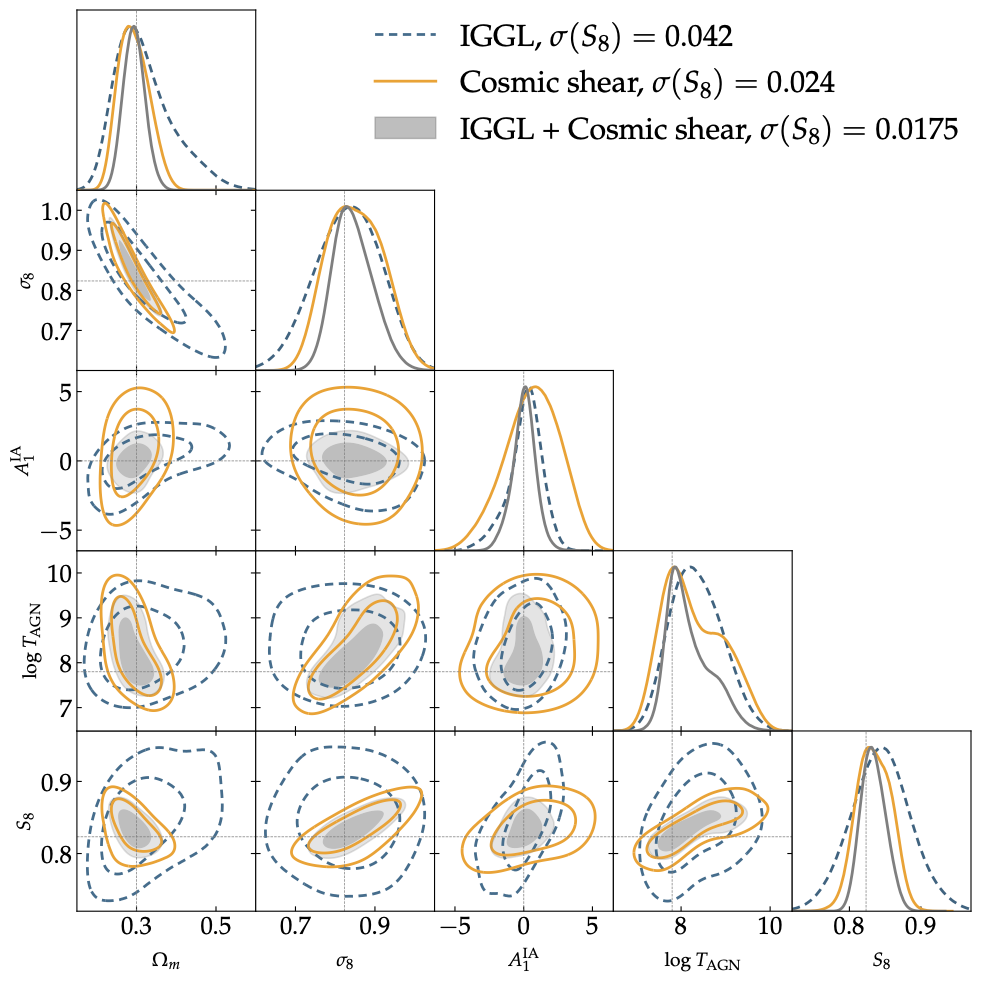
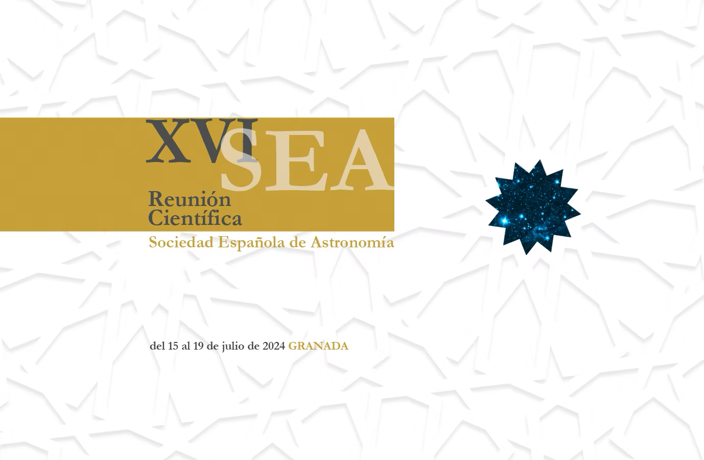
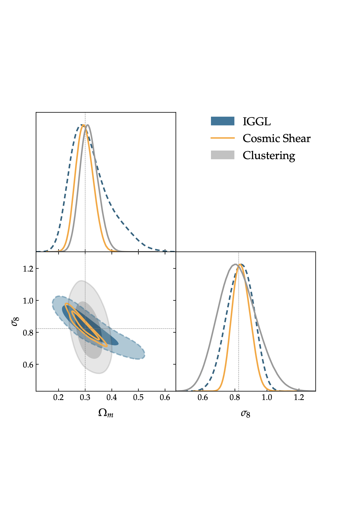
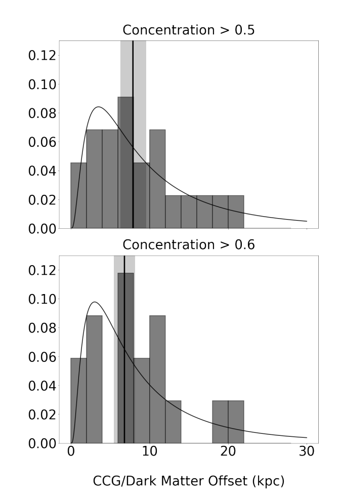
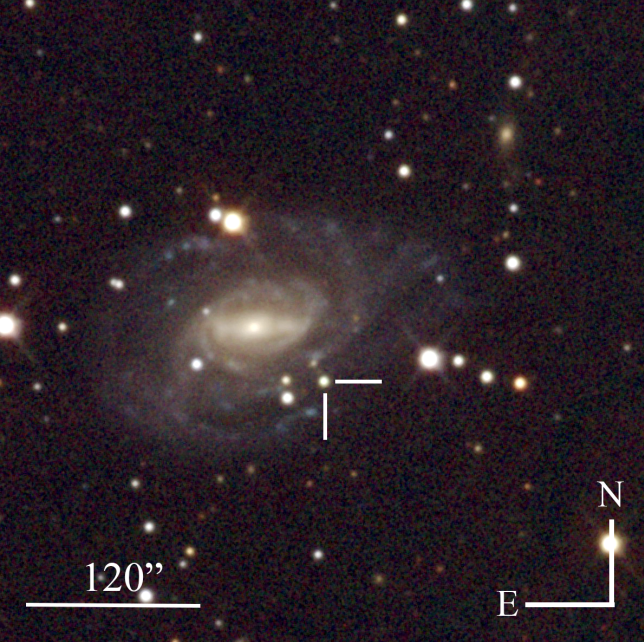
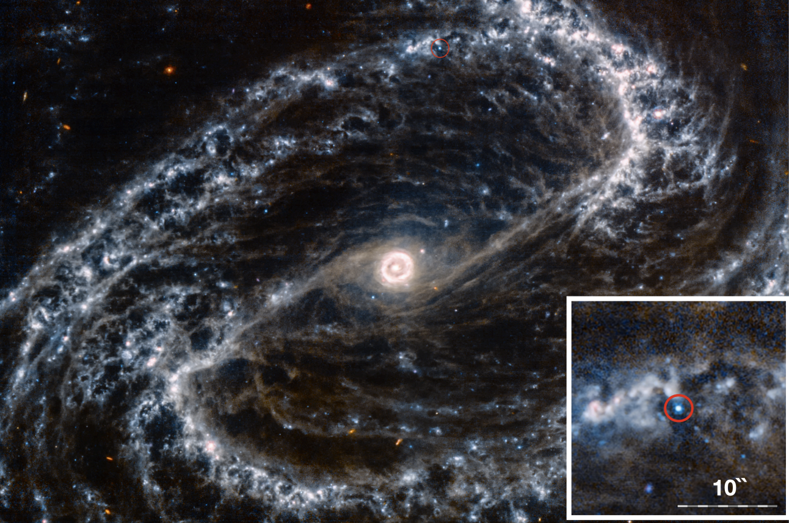
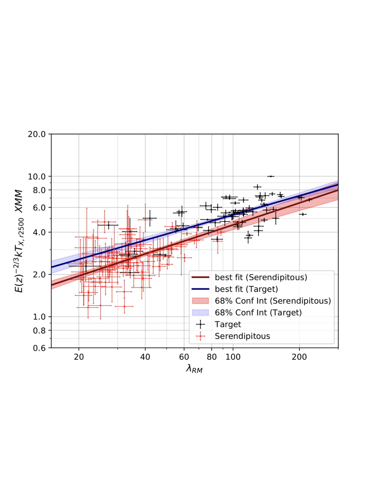
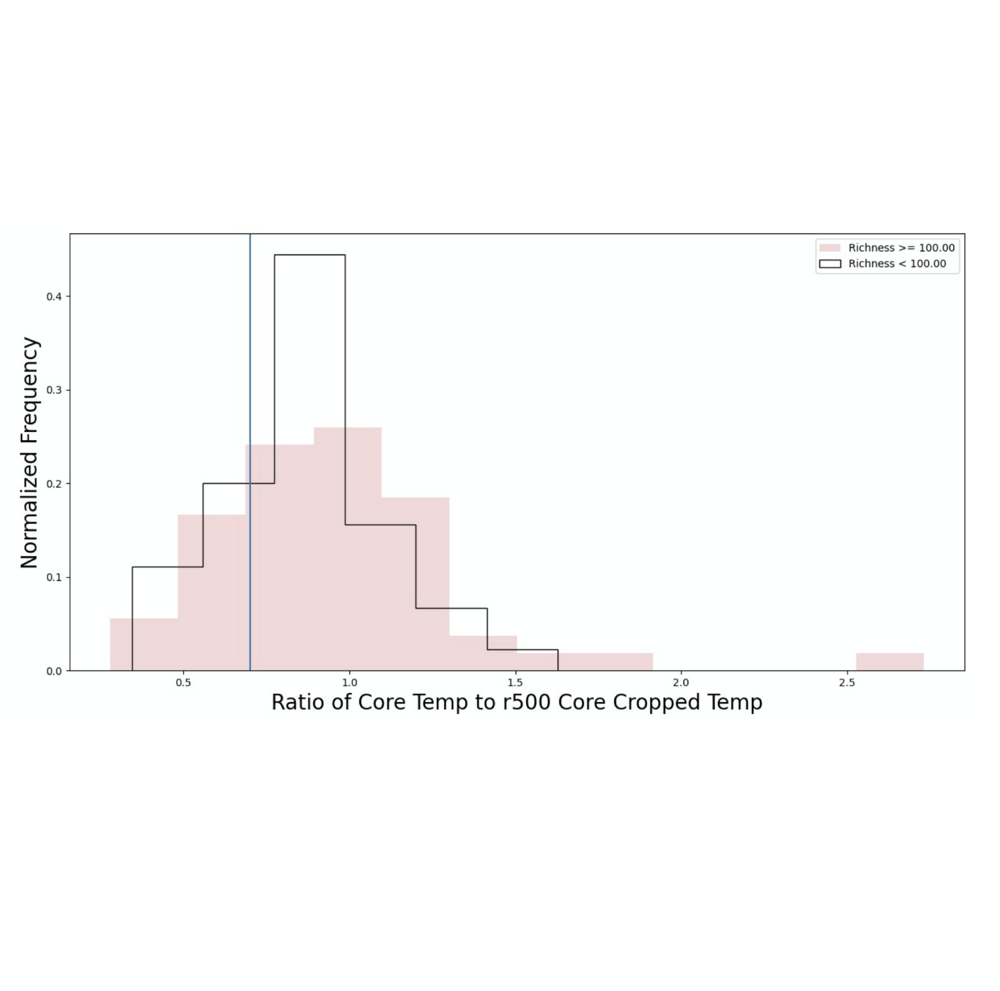

In this paper, we explore how to perform gravitational lensing measurements when the lenses are behind the galaxies being lensed. We find that once we remnove this "traditional" galaxy-galaxy lensing signal, we get much better constraints on systematics like the instrinsic alignments of galaxy shapes and additional lensing due to the mass between the observer and the lens/source distribution, called magnification. We also find that cosmology is still encoded in these measurements, and that these measurements are independent of the galaxy-halo connection.
Presentation and discussion of Inverse Galaxy-Galaxy Lensing with peers at the Dark Energy Survey parallel session at the 16th meeting of the Astronomical Society of Spain.

Forecasting and measuring Inverse Galaxy-Galaxy Lensing (IGGL) with various data samples, with a particular focus on forecasts for LSST Y1 and Y10 datasets. We consider the use of high-redshift lens samples such as Lyman-Break Galaxies (LBGs) as well as previously forbidden lens-source bin combinations from the DESC science requirements document. We are also applying IGGL to the Dark Energy Survey's high-redshift sample, derived from the year 3 dataset.
Low-redshift type Ia supernovae (SNIa) have recently been uncovering very high-accuracy measurements of fσ8, competitive with weak lensing measurements of a similar parameterization of cosmological parameters, S8. My work focuses on teasing out systematic errors for mass-velocity correlations with the new homogenious SNIa catalog
Redshift measurements are integral in the Dark Energy Survey cosmology pipeline. My work focuses on developing an approach that takes one step in the photometric measurements pipeline from taking months to complete to mere days.
For my undergraduate and master's thesis, I studied how one can constrain the possible existence of a dark matter self-interaction cross-section. I have studied this field via X-Ray measuremets of galaxy clusters and via exploring formation scenarios of globular clusters.






{kind=link}
{kind=link}
{kind=link}
{kind=link}
{kind=link}
{kind=link}